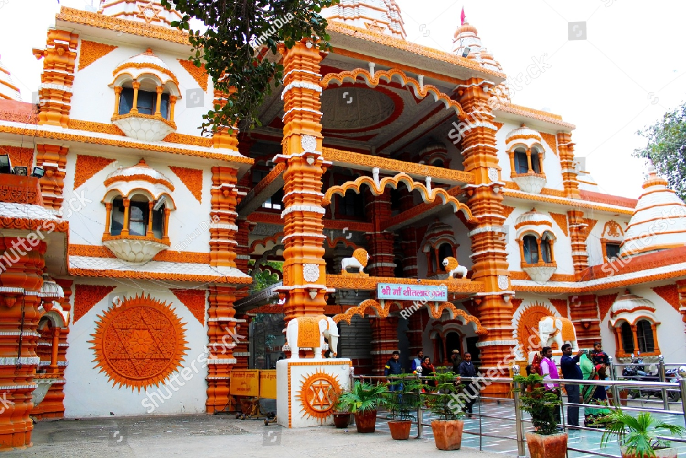

Shitala Mata Temple

Sheetla Mata Temple, Parwanoo
One of the famous attractions of Parwanoo is the Sheetla Mata Temple, located on Kalka-Shimla Highway. It's a very old temple situated next to the Kasauli road in Parwanoo. It has an important place in the cultural history of the Parwanoo. One can enjoy the beautiful view of the temple from the highway. On festive days, pilgrims crowd this place and form queues in the early morning (5 AM).
History of Sheetla Mata Temple
The temple is dedicated to the Hindu deity Mata Sheetla Devi-the wife of Guru Dronacharya of Mahabharata (The Hindu Epic). The Goddess is also popular as Bhagat Lalita Ma and Masai Ma. The temple is an embodiment of Goddess Durga. It is believed that the deity of this temple protects children from small pox and gives them a healthy life. A large number of tourists from different parts of India throng this region to seek the blessings of Sheetla Mata for their children. Milks, water and sweets are offered to the presiding deity of the temple by tourists. On this day, local residents eat the previous day's food as they do not cook food on this day. It is believed that they please the Goddess and get blessings for their family members
Fairs and Festivals
Sheetla Mata Temple festival in Parwanoo is one of the most important festivals, which is celebrated with gusto. It is held twice in a year and just before navaratras, drawing millions of visitors from India and abroad. During this festive season, the national highway in Parwanoo looks stunning and remains flecked with sellers. So, the festival is commonly known as Sheetla Mata Mela.
Gardabh Mela
The two-day Gardabh Mela (donkey fair) is organised annually on the temple premises. The fair facilitates the buying and selling of animals, especially donkeys, mules and horses. The donkeys are believed to be the mount of Sheetala Devi. Hence donkeys are fed delicacies and decorated before being displayed for sale. As per the belief, the worship of Sheetla Devi is considered incomplete until the devotees feed them with milk, grams, green grass and vegetables. It is believed that the donkey will fulfil their desires if satisfied with their services. As per the belief, marriages fixed at this fair are blessed
The Shakta pithas, also called Shakti pithas or Sati pithas (Sanskrit: शाक्त पीठ, Śakta Pīṭha, seats of Shakti[1]), are significant shrines and pilgrimage destinations in Shaktism, the mother goddess denomination in Hinduism. The shrines are dedicated to various forms of Adi Shakti.[a] Various Puranas such as Srimad Devi Bhagavatam state the existence of a varying number of 51, 52, 64 and 108 Shakta pithas[2][3] of which 18 are named as Astadasha Maha (major) in medieval Hindu texts.[2]
Shri Mata Vaishno Devi Temple is one of the 64 and 108 Maha (Major) Shakta pithas and is also the most visited among all. It attracts more than 15 million people annually.[4]
Legends abound about how the Shakta pithas came into existence. The most popular is based on the story of the death of Sati, a deity according to Hinduism. Shiva carried Sati's body, reminiscing about their moments as a couple, and roamed around the universe with it. Vishnu cut her body into 51 body parts, using his Sudarshana Chakra, which fell on earth to become sacred sites where all the people can pay homage to the goddess. To complete this task, Shiva took the form of Bhairava.
Shri Hinglaj Mata temple Shakta pitha is the largest Hindu pilgrimage centre in Pakistan. The annual Hinglaj Yatra is attended by more than 250,000 people.[5]
Most of these historic places of goddess worship are in Nepal and India, but there are seven in Bangladesh, two in Pakistan, and one each in Tibet, Sri Lanka[3] and Bhutan.[6] There were many legends in ancient and modern sources that document this evidence. A consensus view on the number and location of the precise sites where goddess Sati's corpse fell is lacking, although certain sites are more well-regarded than others.
Shakambhari Shakta pitha, Saharanpur, Uttar Pradesh. Shakambhari Devi is one of the 108 Siddha pithas of Brahma Purana and one of the oldest temples of Devi Shakambhari. Around ten million people visit the temple annually.
Maximum number of Shakta pithas are present in the Bengal region. During partition the numbers were West Bengal (18, 1 disputed as Shrinkhala Devi Temple) and Bangladesh (7). After the secret transfer of Dhakeshwari Shakta pitha to Kolkata the numbers stand as West Bengal (19,1 disputed Shrinkhala Devi Temple) and Bangladesh
Hindu literature
The Brahmanda Purana, one of the major eighteen Puranas mentions 64 Shakta pithas of the goddess Parvati in the Bharat or Greater India including present-day India, Bhutan, Bangladesh, Nepal, Sri Lanka, some parts of Southern Tibet in China and parts of southern Pakistan. Another text which gives a listing of these shrines, is the Shakta Pitha Stotram, written by Adi Shankara, the 9th-century Hindu philosopher.[7]
According to the manuscript Mahapithapurana (c. 1690–1720 CE), there are 52 such places. Among them, 23 are located in the Bengal region, 14 of these are located in what is now West Bengal, India, 1 in Baster (Chhattisgarh), while 7 are in what is now Bangladesh.
Daksha yajna
According to legend, lord Brahma once conducted a huge yajna (ritual sacrifice), where all the prajapatis, deities, and kings of the world were invited. Shiva and Sati were also called on to participate in the yajna. All of them came for the yajna, and sat in the ceremonial place. Daksha came last. When he arrived, everyone in the yajna, with the exception of Brahma and Shiva, stood up, showing their reverence for him.[8] Brahma, being Daksha's father, did not rise. Shiva, being Daksha's son-in-law, and also due to the fact that he considered himself superior in stature to Daksha, remained seated. Daksha misunderstood Shiva's gesture, and considered this act an insult. Daksha vowed to take revenge on the insult in the same manner.[9]
Daksha performed a yajna with a desire to take revenge on Shiva. Daksha invited all the deities to the yajna, except Shiva and Sati. The fact that she was not invited did not deter Sati's desire to attend the yajna. She expressed her desire to Shiva, who tried his best to dissuade her from going. He relented at her continued insistence, Sati went to her father's yajna. However, Sati was not given her due respect at the yajna, and had to bear witness to Daksha's insults aimed at Shiva. Anguished, Sati cursed her father and self-immolated.
Enraged at the insult and death of his spouse, Shiva in his Virabhadra avatar destroyed Daksha's yajna and cut off his head. His anger not abated and immersed in grief, Shiva then picked up the remains of Sati's body and performed the Tandava, the celestial dance of destruction, across all creation. Frightened, the other deities requested Vishnu to intervene to stop this destruction. As a recourse, Vishnu used the Sudarshana Chakra on Sati's corpse. This caused various parts of Sati's body to fall at several spots across the world.[10]
The history of Daksha yajna and Sati's self-immolation had immense significance in shaping the ancient Sanskrit literature and influenced the culture of India. Each of the places on Earth where Sati's body parts were known to have fallen were then considered as Shakta pithas and were deemed places of great spiritual importance.[11] Several stories in the Puranas and other Hindu religious books refer to the Daksha yajna. It is an important incident in both Shaivism and Shaktism, and marks the replacement of Sati with Parvati, and of the beginning of Shiva's house-holder (grihastāshramī) life from an ascetic. This event is ahead of the emergence of both of the couple's children, Kartikeya and Ganesha